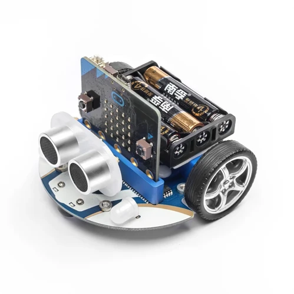
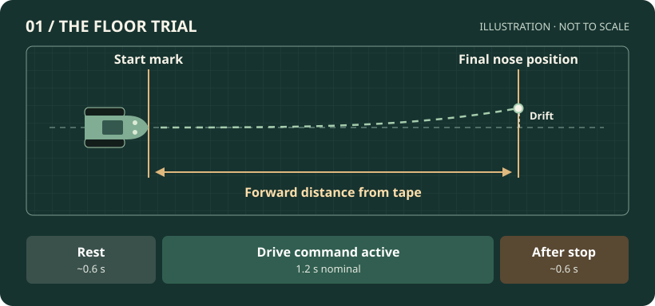
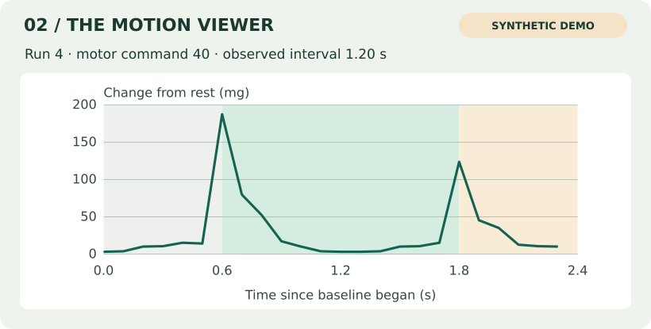

RANDALL YOUNG · BARGAIN BIN ROBOTICS · ROBOT_EDU
Cutebot Motion Evidence Lab
A repeatable floor trial that separates what a robot is told to do from what it actually does.
ROBOT_EDU · CLASSROOM PREVIEW v0.1
Did the robot do what you told it?
Tell a small rover to drive for 1.2 seconds. Do it three times. If each run gets the same command, will the car stop in the same place?
Try the motion viewer Download the classroom kit
Firmware compiled · Physical Cutebot trials pending


01 · Capture
Same command. Same finish?


- Mark a start line. Choose a target distance and decide how close is good enough.
- Keep the floor surface and start alignment the same. Alternate settings 25 and 40 for three scored runs each.
- Measure each endpoint independently with tape. Compare the middle distance and the spread for each setting.
02 · Analyze
Three records, three different jobs

- Controller command
- What the firmware asked for. These settings aren’t calibrated speeds.
- Accelerometer trace
- When motion, tilt, or vibration changed relative to rest.
- Measuring tape
- How far the chassis actually displaced along the lane.
The trace cannot tell you how far the car traveled. A quiet trace does not prove the car was stopped. Open the viewer and choose Load synthetic demo to see why the tape and motion trace answer different questions.
03 · Publish
Give the next team a rule they can check
Hand another team your target band, the tape readings, and a motion trace. Ask whether they would choose setting 25, setting 40, or neither. Have them try one new run and see whether your rule holds.
- Classic Arduino
- Build a stationary timing or ranging station and check it against the tape.
- micro:bit V2 + Cutebot
- Put the controller and motion logger on the rover. Use a battery-powered run and export the saved data later.
- Android / iPhone
- Open the viewer in a phone browser, load the exported CSV, and review another team’s evidence. No robot pairing or control is required.
See the source and hardware setup · Next, make the rover map a room · See the parallel in SQM+